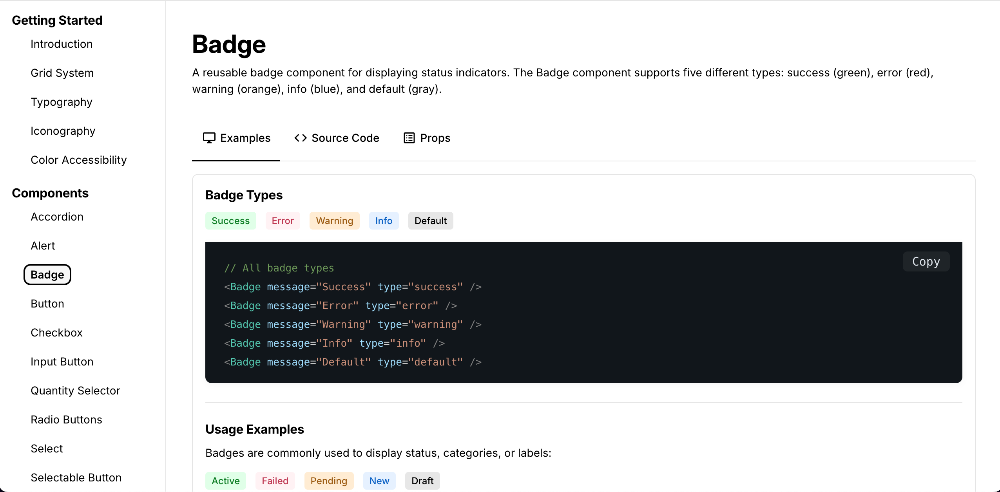
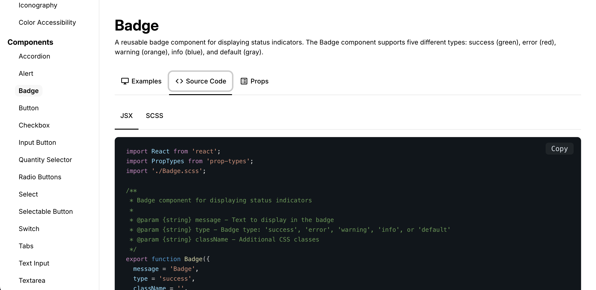

Design Systems: How One Designer Built What Engineering Couldn't
The Problem
We were modernizing legacy UIs with a small design team and no front-end resources. New interfaces are daunting and visible—sales wants demo-ready visuals, developers want plug-and-play components, clients don't want workflow disruption.
We knew legacy workflows don't get better in a new skin. And accessibility had to be step one, or it wouldn't happen at all.
Without a living design system, every component meant 2-3 clarification questions per user story, retrofitted accessibility, and inconsistent quality across teams.
Everyone loved the idea of coded component libraries so devs didn't have to guess. But there were no developers available to build it. So the idea sat.
The Leadership Decision
During a team meeting, one of the designers asked: "Could I just make it myself?"
I had two choices: protect them from scope creep and keep waiting, or trust the team to reorganize and let someone own something big.
I chose the second:
- Let the team talk through how to redistribute work
- Got budget for Claude Code and Vercel (positioned as an AI-forward experiment)
- Set boundaries: couldn't break stride with business as usual
- Stepped back once the framework was set
What We Built
Using Figma libraries and Claude Code, we built a functional living design system with:
- Every UI component in code
- Accessibility baked in: ARIA tags, semantic HTML, WCAG compliance
- Dev niceties: props, variants, color pickers, multi-language support


The Impact
Eliminated friction:
- Design-dev questions dropped from 2-3 per story to zero
- 3 out of 4 dev teams now use system components as default
- PMs saw value in fewer refinement questions
Accessibility by default:
- Pre-system: inconsistent, retrofitted
- Post-system: WCAG-compliant out of the box
- QA proactively started adding accessibility to test criteria—first time ever—because the system made it achievable
Strategic positioning:
- Executives noticed the clever use of Claude, GitHub, Vercel
- Team became seen as AI-forward
- Other dev teams requested their own systems
What This Proves
Design systems aren't outlandish ideas. But building one with limited resources while not breaking stride needed collaboration, trust, and creativity.
This worked because I trusted the team to solve their capacity problem, removed blockers instead of micromanaging, and made accessibility non-negotiable from day one.
If a team member asks to be responsible for something big, I always say yes and support them to succeed.